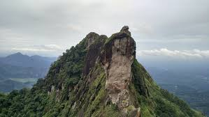

Gallery


Kottayam, known as the land of lakes, letters, and latex, is a beautiful town in Kerala, India. It is famous for its high literacy rate, scenic backwaters, and rubber plantations.
Kottayam has a deep-rooted history in Kerala’s political and literary movements. It was one of the first towns in India to achieve 100% literacy and played a key role in Kerala’s publishing industry.
The town is known for its vibrant culture, deeply influenced by Malayalam literature, traditional art forms, and Christian heritage. Major festivals like Onam and Vishu are widely celebrated.
Email: info@visitkottayam.com
Phone: +91 98765 43210
© 2025 Welcome to Kottayam. All rights reserved.